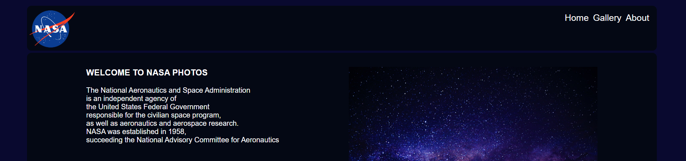

Seasoned professional offering 10+ years of Mainframe Developer expertise working in cross-functional teams and completing projects on-time. Seamlessly manages workload to meet deadlines independently or in teamwork. Excellent verbal and written communication abilities and interpersonal skills. Recently renewed education and training in Object-Oriented Design, Agile Methodology, and Quality Assurance. Experienced in analysis, design, coding, testing, and documenting IBM Mainframe application-system. My strengths of Problem Solve, Time Management, and Quality Focus are an excellent addition to drive the team to acquire a high standard solution for the challenges.
- Professional experience in all phases of the System Development Life Cycle (SDLC)
- Gathered business requirements, analyze and coordinate with stakeholders, co-workers and technical support
- Analysis, research, design, and document of system, sub-systems, and programs
- Transform business requirements into the Relational Database design
- Investigate system or program problems, propose solutions and design improvements for increased efficiency
- Actively design and coding complex mainframe applications using COBOL, CICS, VSAM, and DB2
- Modify existing programs to adapt it to new requirements, to correct errors, to upgrade, or to improve performance
- Mentoring the junior-level personnel in the coding best practices, debug techniques and troubleshooting
- Reviews code walkthroughs and report progress with management
- Analyzing requirements and process to implement or correct logic
- Creates and executes unit and system test to aim a defect-free system and verify solutions meet specifications
- Evaluate programs performance in Relational Database such as DB2 to improve performance
- Troubleshoot programs and system integration and debug problems, modifying existing programs to correct errors
- Supervise implementation and verify program functionality acquire the expected results
- Assists in creation, execution, and Quality Assurance Review for Unit Test, SIT, UAT and Regress Test results
Programming Languages: Cobol, CICS, JCL, Easytrieve, PL/SQL, SQL, C#, HTML, CSS, Java, Javascript
Relational Databases: DB2, VSAM, Oracle, MS SQL, MySQL
Test Automated Tools: Selenium, Cucumber
Project Management: PMBOK, Agile Methodology, Scrum, Waterfall, OO Design, Quality Assurance
Microsoft Tools: Visual Studio, Expression Web 4, MS Office - Word, PowerPoint, Excel, Vision
DIPLOMA
SOFTWARE ENGINEERING
GPA 4.10
Centennial College
Toronto, CA
Sep 2018 - Dec 2019
Through teamwork, projects and hands-on exercises, I have acquired practical development skills in the area of Front End, Back End, Database Administration, and IT Project Management. My best-accomplished projects were:
- Restaurant Web site – HTML/CSS and Javascript
- Cashier Application – HTML/CSS, C# ASP.NET Core MVC, Oracle database (Modelling and DBMS)
- Faculty Application – HTML/CSS, C# ASP.NET Core MVC, MySQL (Modelling and DBMS)
- Visually Impaired Accessibility Application – Scrum Master role
- Rental Apartment Repair Control System – Project Management Plan’s development
- Technical: HTML, CSS, C#, .NET, Visual Studio, Javascript, Java, Oracle, PL/SQL, MySQL, Selenium, Vivify
CERTIFICATIONS
WEB DEVELOPER
Senac | Gramado, Brazil | Aug 2016 - Sep 2017
Technical: HTML, CSS, Dreamweaver, Photoshop
MAINFRAME DEVELOPER
Banco Meridional do Brasil | Porto Alegre, Brazil | Mar 1992 - Jun 1993
Technical: TSO, Natural, JCL, DB2
WEB DEVELOPER
Charlote na Web
Gramado, Brazil
Jan 2017 - Jun 2018
This opportunity provided me with more experience in client management, sales relationships,
designing and developing Web Sites in HTML/CSS and WordPress.
My achievements were:
- Developed websites using HTML/CSS, Flash and WordPress
- Improved e-commerce website in WordPress including and testing payment methods
- Enhanced the content for a travelling website managing brand, domain, socials media, and improving SEO
- Technical: HTML5, CSS3, WordPress, Photoshop (basic), Fireworks, Javascript, Flash, and MySQL
MANAGER
Aardvark Inn
Gramado, Brazil
Mar 2008 - Jul 2016
Playing the role of Manager, I was responsible for all aspects of assessment, development, and implement
the operations and services at the new hotel. Besides, I was responsible for daily staff management
to acquire excellent customer experience. I had the opportunity to develop my leadership, teamwork,
customer service, and management skills.
My achievements were:
- Design and implement a resource planning MS Excel that aimed an efficient booking and account flow control
- Increased visibility in the Hotel Web Page designing and developing a new website and social networking
- Accomplished the implementation of a Hotel PMS (Property Management System) successfully
- Decrease issues developing, documenting, and implementing policies and procedures for hotel operation
- Reach service efficiency and effectiveness through the quality assurance procedures
- Technical: HTML, CSS, MS Excel, Microsoft Office, Accountancy, Financial
SENIOR MAINFRAME DEVELOPER
Fidelidade-Mundial
Lisbon, Portugal
Apr 1997 - Dec 2007
As a consulter, I contribute to many projects in the IBM-MVS environment in the Senior Mainframe
Developer position developing applications in Cobol CICS and Batch. I had the opportunity to develop
the ability to work independently as in teamwork, my leadership, organization, problem-solve,
and communication skills.
My achievements were:
- Successfully involved in all phases of the SDLC for the new Financial System
- Actively design and build Cobol applications as execute unit and integration tests to aim a defect-free system
- Transform business requirements into the DB2 Database design, and optimizing the SQL access
- Mentoring the developing team in the coding best practices, debug techniques and trouble-shoot
- Accomplished the analysis, research, design, and testing of invoice functionalities and cashier controllers
- Gathered business requirements, analyze and design new Financial Functionalities and Reports
- Enhancements and troubleshoot in COGEN Insurance System
- Technical: COBOL/CICS, DB2, SQL, VSAM, JCL, TSO, IBM-MVS, Easytrive
MAINFRAME DEVELOPER
Meridional do Brasil
Porto Alegre, Brazil
Jun 1992 - Mar 1997
I receive technical training in the mainframe environment, and I had the opportunity to develop
the ability to work independently as in teamwork, product support, and organization skills.
My achievements were:
- Modify existing Natural programs to correct errors or adapt to new requirements
- Developed program and sub-system design, creates screen layouts, and printed outputs
- Assisted debug and troubleshooting in production
- Technical: Natural, COBOL, Adabas, SQL, JCL, Easytrive, TSO, IBM-MVS

Task
Build a flickr web-app that fetches images from Nasa's account via the Flickr API (API details).
You are welcome to use any technology to build it and design the layout in any way that you see fit.